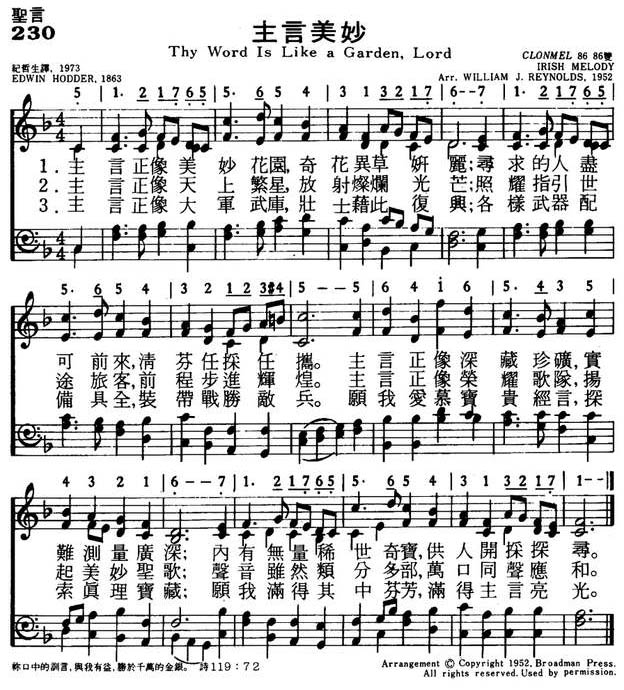
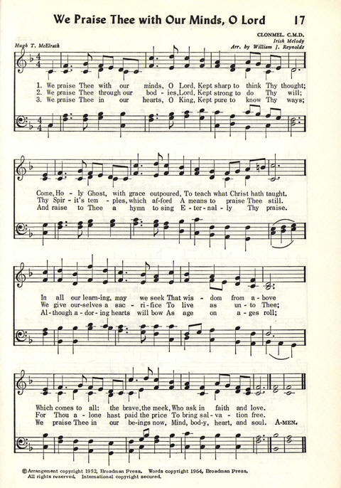
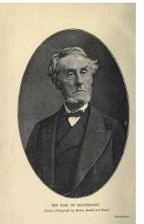

|
|
|
|
1 Thy Word is like a garden, Lord,
With flowers bright and fair;
And everyone who seeks may pluck
A lovely cluster there.
Thy Word is like a deep, deep mine;
And jewels rich and rare
Are hidden in its mighty depths
For every searcher there.
2 Thy Word is like a starry host:
A thousand rays of light
Are seen to guide the traveler,
And make his pathway bright.
Thy Word is like an armory,
Where soldiers may repair,
And find, for life’s long battle day,
All needful weapons there.
3 O may I love Thy precious Word,
May I explore the mine,
May I its fragrant flowers glean,
May light upon me shine.
O may I find my armor there,
Thy Word my trusty sword;
I’ll learn to fight with every foe
The battle of the Lord.
Amen.
Source: Worship
and Service Hymnal: For Church, School, and Home #163
|
230主言美妙
1.主言正像美妙花园，奇花异草妍丽；
寻求的人尽可前来，清芬任采任携。
主言正像深藏珍矿，实难测量广深；
内有无量稀世奇宝，供人开采探寻。
2.主言正像天上繁星，放射灿烂光芒；
照耀指引世途旅客，前程步进辉煌。
主言正像荣耀歌队，扬起美妙圣歌；
声音虽然类分多部，万口同声应和
3.主言正像大军武库，壮士借此复兴；
各样武器配备具全，装带战胜敌兵。
愿我爱慕宝贵经言，探索真理宝藏；
愿我满得其中芬芳，满得主言亮光。
|
|
https://www.mred365.cn/szxg/7233.html

https://hymnary.org/hymn/CP1964/page/15
CLONMEL
 |
|
|
|
-
 “Thy Word Is Like A Garden Lord” features Ralph’s choir from “The Singing
Hymnbook.”
“Thy Word Is Like A Garden Lord” features Ralph’s choir from “The Singing
Hymnbook.”
-
LX1852
Thy Word Is Like A
Garden, Lord
230主言美妙
|
Short Name: |
Edwin Hodder |
|
Full Name: |
Hodder, Edwin, 1837-1904 |
|
Birth Year: |
1837 |
|
Death Year: |
1904 |
Hodder, Edwin,

published in 1863 The
New Sunday School Hymn Book, and in 1868 a New and Enlarged edition of
the same. To this collection he contributed 27 hymns, each of which is
headed with his name. Of these nearly one half have passed into other
hymnals for children, including Major; the Baptist Sunday
School Hymn Book, 1880 ; the Sunday School Union Voice
of Praise, 1886, and others. Born in 1838.
--John Julian, Dictionary
of Hymnology, Appendix, Part II (1907)
Tune Information
|
Title: |
CLONMEL |
|
Arranger: |
William Jensen Reynolds (1952) |
|
Meter: |
8.6.8.6 |
|
Incipit: |
51217 65565 43132 |
|
Key: |
E♭
Major |
|
Source: |
Irish Melody |
|
Copyright: |
Arr. © 1952. Renewal 1980 Broadman Press |
|
Short Name: |
William Jensen Reynolds |
|
Full Name: |
Reynolds, William Jensen |
|
Birth Year: |
1920 |
|
Death Year: |
2009 |

Pseudonyms include:
Bigelow, James
Buie, Dean
Clark, John
Day, Francis
Dorff, Gregory
Dorsey, Jane
Drakestone, John
East, Richard
Eastis, Ellen
Frye, Dan
Gregory, Peter
Harrold, Stan
Hawk, John
Horn, Ellen
Ingham, Marie
Jordaan, Jacques
Keely, Grant
Kije, Cyd
Kringel, Cark
Kuliami, Tiki [?]
Lee, Wilbur
Long, Richard
Long, Robert
MacDougall, Thom
Madsen, Carl O.
Monroe, Lou
Munroe, June
Reed, Ruth
Rodgers, Lee
Rosemont, David
Ross, Don
Saul, J. Crawford
Sneed, Roger
Wheeler, Annette
Winston, Clyde
York, Henry
--Email from William
Colson to Mary Louise VanDyke, 4 May 2005, DNAH
Archives. Names taken from the program of Reynolds' retirement dinner.
Colson notes, "The program has faded and the one designated with a question
mark is not 100% certain."
"Open Thou mine eyes, that I may behold wondrous things out of Thy law" (Ps.
119.18)
INTRO.: A hymn which identifies figuratively some of the wondrous things that we
may behold out of God’s law is "Thy Word Is Like A Garden, Lord." The text was
written by Edwin Hodder, who was born on Dec. 13, 1837, at Staines in Middlesex,
England. Moving to New Zealand in 1856 at age nineteen as part of a social
experiment with a group of idealistic pioneers, he returned to England in 1861,
publishing his Memories
of New Zealand Life the following year, and became a civil
servant, remaining in this work until his retirement. "Thy Word Is Like A
Garden, Lord," was originally entitled "Holy Scripture," and was first published
in his 1863 work, The
New Sunday School Hymn Book, which contained 23 of his own hymns. The song
consisted of seven four-line stanzas, but most books today use six of them to
form three eight-line stanzas. An enlarged edition of the book came out in 1868
and contained four more of Hodder’s hymns. In 1897, he retired to Henfield in
Sussex, England, where he produced his final volume, The
Life of a Century, in 1900, before he died at Chichester in Sussex on Mar.
1, 1904.
The tune (Bethlehem, Seraph, Evangel, or Old Carol) is attributed to Gottfried
W. Fink (1783-1846). It is believed that it may possibly have been an old
English melody adapted by Fink and published by him in 1841 or 1842. It was
first used as a hymn tune with the hymn "While Shepherds Watched Their Flocks"
in the 1874 Church
Hymns by Arthur S. Sullivan (1842-1900). Among hymnbooks
published by members of the Lord’s church during the twentieth century for use
in churches of Christ, the only one of which I am aware where the song appeared
was the 1935 Christian
Hymns (No. 1) edited by L. O. Sanderson for the Gospel
Advocate Co., where the tune was arranged by Sanderson and the text was
attributed to T. H. Gill. There was a well-known hymnwriter of the nineteenth
century, Thomas Hornblower Gill (1819-1906). However, I have not been able to
find any connection between Gill and this hymn. I suppose that it is within the
realm of possibility that Hodder’s hymn was an adaptation of something written
by Gill or that Gill arranged Hodder’s words, but I have found no reference that
would confirm this. In all likelihood, the attribution to Gill was simply an
error.
The song describes in highly poetic language some of the blessings of God’s
word.
I. Stanza 1 refers to God’s word as a garden.
"Thy Word is like a garden, Lord, With flowers bright and fair;
And everyone who seeks may pluck A lovely cluster there.
Thy Word is like a deep, deep mine, And jewels rich and rare
Are hidden in its mighty depth For every searcher there."
A. The word "garden" suggests a lovely place with beautiful flowers: Gen.
2.8-16; and the Bible is certainly a thing of great beauty
B. However, it more than just something nice to look at; the idea of plucking a
lovely cluster there suggests that there are benefits that we can receive from
God’s word: Ps. 103.1-5
C. Furthermore, these benefits can be more lasting than the passing beauty of
flowers because God’s word is also like a deep mine with wonderful jewels, and
therefore is more precious than gold: Ps. 19.7-10
II. Stanza 2 refers to God’s word as a light
"Thy Word is like a starry host; A thousand rays of light
Are seen to guide the traveler, And make his pathway bright.
Thy Word is like an armory, Where soldiers may repair,
And find, for life’s long battle-day, All needful weapons there."
A. God created the starry host in the sky to help give light at night: Gen.
1.14-18
B. And just as the stars can be used at night to help guide travellers in the
direction they wish to go, so God’s word gives light to guide us on our way: Ps.
119.105
C. In addition, God’s word also provides the armor and weapons that we need to
fight the good fight of the faith as soldiers of the Lord while we look to its
light on our journey: 1 Tim. 6.12, 2 Tim. 2.3-4
III. Stanza 3 refers to God’s word as a sword
"Oh, may I love Thy precious Word, May I explore the mine,
May I its fragrant flowers glean, May light upon me shine!
Oh, may I find my armor there! Thy Word my trusty sword,
I’ll learn to fight with every foe The battle of the Lord."
A. Because of all these blessings and benefits of God’s word, we should love
it: Ps. 119.97
B. But most of all, we need to remember that it is "the sword of the Spirit":
Eph. 6.10-17
C. Therefore, we can and must use it to wage the good warfare by which we can
gain the victory of faith: 1 Tim. 1.18, 1 Jn. 5.4
CONCL.:
Several years ago I included the words of this hymn as a poem in the bulletin of
the church where I was working, and I recall that several members made mention
that they particularly liked it. It is a song with which most of us are probably
not familiar, but any song that serves to increase our appreciation for the holy
scriptures is worthy of our consideration. Our attitude towards the Bible should
be that we can always say, "Thy Word Is Like A Garden, Lord."
https://hymnstudiesblog.wordpress.com/2009/07/17/quotthy-word-is-like-a-garden-
I am
continually amazed at how our minds work. At times I think I have
difficulty remembering things that happened just yesterday, but at other
times I suddenly recall things that happened decades ago. That happened
to me again a few weeks ago when I suddenly remembered this week's hymn
choice, even though it is probably 50 years since I last heard it sung,
in my grandfather's church in Sunbury, PA. This experience is a good
reminder of how important it is to store good things in our mind such as
scripture and even good music. It is interesting that some hymn writers
were neither ministers nor professional poets, but ordinary people who
loved to sing and to write new Christian songs. Edwin Hodder
(1837-1904) spent the early part of his working life in New Zealand,
doing sociological research among the Maori aborigines. Later he became
a civil servant in his native England. As a hymn writer he would
probably be considered an amateur, but in this hymn alone he has made a
great contribution to our worship. A simile makes a comparison between
two things, for the purpose of illustration, and to enrich our
understanding. In his hymn, Mr. Hodder utilizes a series of similes to
help us understand the value of the Word of God in our lives.
In the first verse he uses the garden and a mine, reminding us that God's
Word is like beautiful, fragrant flowers that can be picked by anyone,
as well as like a deep, deep mine where precious jewels can be found.
Flowers are all around us for picking, but the precious jewels require
hard work to find and mine. It is the same with the Word of God. There
are simple truths on the surface that are easily grasped. But others
require a level of spiritual maturity to understand, and a dedication to
study and meditate on what God says.
In the second verse we have another set of comparisons. the Bible is
like the glittering light of the stars, giving the traveler help on his
way, and like an armory where a soldier can be equipped to fight the
battle for truth and righteousness.
The third verse is a prayer of dedication. His original song had seven
stanzas, but only three are commonly used today.
One of the omitted stanzas says:
Thy Word is like a glorious choir,
And loud its anthems ring;
Though many tongues and parts unite,
It is one song they sing.
As you think about these words this week, may you gain a deeper
appreciation for the Word of God. May you dedicate yourself to enjoying
the fragrance of His promises, digging deep for the jewels and truth He
has shared, being guided by the light of the Word on your life's path
and to preparing and using the armor of God as you face the spiritual
battles of life.
http://barryshymns.blogspot.com/2015/05/thy-word-is-like-garden-lord.html
{kind=link}